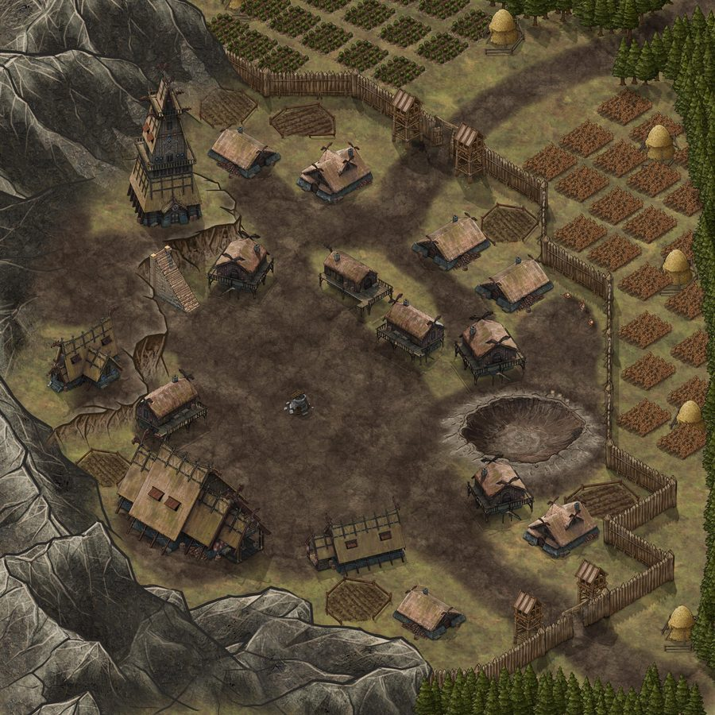

Feudi
Scambio valute
Scambia … diamanti blu per ogni diamante viola.
Scambia … diamanti viola per ogni tributo.
Strutture Civili
Costruttori: …
Tempo rimanente: …
Ogni diamante blu riduce il tempo di ….
Esercito
Reclutatori: …
Tempo rimanente: …
Ogni diamante blu riduce il tempo di ….
Nessun evento recente.
Messaggi
Questa schermata sarà completata quando saranno definiti i comandi del protocollo lato server.
Costruzione
Strutture Civili
Strutture Militari
Caserme
Addestramento
Città
Sposta le truppe tra il Villaggio e ogni struttura per rinforzarne la guarnigione.

Negozio
Gli acquisti in Diamanti sono attivi da subito. I pacchetti con pagamento reale (USDT) sono mostrati ma non ancora disponibili.
La Ricerca rappresenta il progresso delle conoscenze del tuo regno. Investendo tempo e risorse potrai sbloccare nuove possibilità, migliorare strutture, eserciti e strategie.
Tempo Ricerca: …
Strutture Civili
Ogni diamante blu riduce il tempo di ….
Esercito
Città
Stato Attivi
Tempo rimanente dei potenziamenti temporanei in corso.
Potenza
Bonus
Percentuali di bonus attive su produzione, costruzione e combattimento.
Statistiche Generali
Guerra e Razzie
Unità
Esplora i Villaggi/Città Barbare per stimare le loro truppe, oppure sfida un altro giocatore in PVP. Le truppe da inviare si scelgono a tier (I-V) come nello Spostamento Truppe — restano impostate finché non lanci l'attacco.
Barbari
Esercito da Inviare
Comune ai Barbari e al PVP: imposta le quantità qui, poi premi "Attacca" nel pannello del bersaglio scelto.
PVP
Raggiungi il livello richiesto per sbloccare le battaglie PVP.
Report
Report di battaglia e di spionaggio. Tocca una riga per il dettaglio.
Ricompense Mensili
La barra si riempie con i punti guadagnati completando le quest. Clicca su una ricompensa raggiunta per riscattarla. Scorri per vedere tutte le ricompense.
0 / 0 punti
Quest
GamePass Gold
Stato non ancora ricevuto dal server.
Premi Giornalieri
Accedi ogni giorno per riscattare un premio, fino al 90° giorno consecutivo con il GamePass Gold attivo. Attenzione: se salti anche un solo giorno, i premi ripartono dal Giorno 1.
Sezione
Questa schermata sarà completata quando saranno definiti i comandi del protocollo lato server.